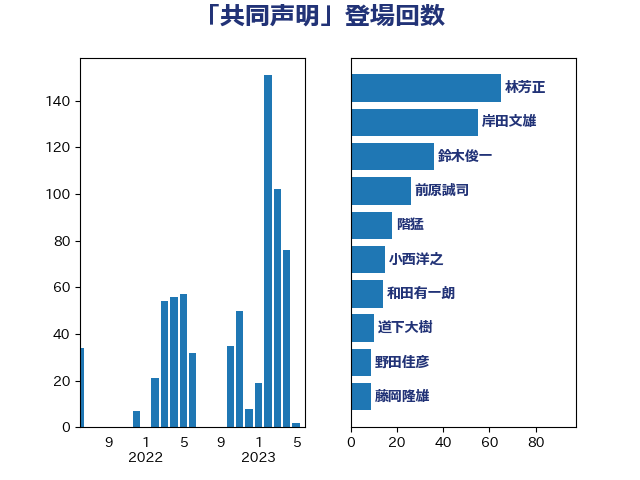

単語「共同声明」

| 茂木敏充 | 自由民主党 | 44 回 |
| 小西洋之 | 立憲民主党 | 37 回 |
| 岸田文雄 | 自由民主党 | 27 回 |
| 林芳正 | 自由民主党 | 25 回 |
| 菅義偉 | 自由民主党 | 15 回 |
| 鈴木俊一 | 自由民主党 | 14 回 |
| 伊波洋一 | 無所属 | 13 回 |
| 佐藤茂樹 | 公明党 | 11 回 |
| 和田有一朗 | 日本維新の会 | 11 回 |
| 岸信夫 | 自由民主党 | 11 回 |
| 浅田均 | 日本維新の会 | 11 回 |
| 井上哲士 | 日本共産党 | 9 回 |
| 緑川貴士 | 立憲民主党 | 9 回 |
| 鈴木憲和 | 自由民主党 | 9 回 |
| 穀田恵二 | 日本共産党 | 8 回 |
| 山下芳生 | 日本共産党 | 7 回 |
| 篠原豪 | 立憲民主党 | 7 回 |
| 加藤勝信 | 自由民主党 | 6 回 |
| 麻生太郎 | 自由民主党 | 6 回 |
| 中川正春 | 立憲民主党 | 5 回 |
| 石井章 | 日本維新の会 | 5 回 |
| 階猛 | 立憲民主党 | 5 回 |
| 井上英孝 | 日本維新の会 | 4 回 |
| 岩渕友 | 日本共産党 | 4 回 |
| 杉田水脈 | 自由民主党 | 4 回 |
| 松野博一 | 自由民主党 | 4 回 |
| 梶山弘志 | 自由民主党 | 4 回 |
| 石川博崇 | 公明党 | 4 回 |
| 笠井亮 | 日本共産党 | 4 回 |
| 西田昌司 | 自由民主党 | 4 回 |
| 赤嶺政賢 | 日本共産党 | 4 回 |
| 重徳和彦 | 立憲民主党 | 4 回 |
| 青柳仁士 | 日本維新の会 | 4 回 |
| 中山展宏 | 自由民主党 | 3 回 |
| 佐藤正久 | 自由民主党 | 3 回 |
| 岡田克也 | 立憲民主党 | 3 回 |
| 泉健太 | 立憲民主党 | 3 回 |
| 渡辺周 | 立憲民主党 | 3 回 |
| 牧山ひろえ | 立憲民主党 | 3 回 |
| 田中健 | 国民民主党 | 3 回 |
| 田村智子 | 日本共産党 | 3 回 |
| 福山哲郎 | 立憲民主党 | 3 回 |
| 野田佳彦 | 立憲民主党 | 3 回 |
| 青柳陽一郎 | 立憲民主党 | 3 回 |
| 鬼木誠 | 立憲民主党 | 3 回 |
| 鷲尾英一郎 | 自由民主党 | 3 回 |
| 三浦信祐 | 公明党 | 2 回 |
| 上田清司 | 国民民主党 | 2 回 |
| 中西祐介 | 自由民主党 | 2 回 |
| 大塚耕平 | 国民民主党 | 2 回 |
| 小林鷹之 | 自由民主党 | 2 回 |
| 山添拓 | 日本共産党 | 2 回 |
| 山田宏 | 自由民主党 | 2 回 |
| 浜野喜史 | 国民民主党 | 2 回 |
| 海江田万里 | 立憲民主党 | 2 回 |
| 玉木雄一郎 | 国民民主党 | 2 回 |
| 田島麻衣子 | 立憲民主党 | 2 回 |
| 秋野公造 | 公明党 | 2 回 |
| 萩生田光一 | 自由民主党 | 2 回 |
| 藤岡隆雄 | 立憲民主党 | 2 回 |
| 青山大人 | 立憲民主党 | 2 回 |
| 高木かおり | 日本維新の会 | 2 回 |
| 上杉謙太郎 | 自由民主党 | 1 回 |
| 中司宏 | 日本維新の会 | 1 回 |
| 中島克仁 | 立憲民主党 | 1 回 |
| 中川宏昌 | 公明党 | 1 回 |
| 中西健治 | 自由民主党 | 1 回 |
| 勝部賢志 | 立憲民主党 | 1 回 |
| 古賀之士 | 立憲民主党 | 1 回 |
| 和田義明 | 自由民主党 | 1 回 |
| 國場幸之助 | 自由民主党 | 1 回 |
| 塩崎彰久 | 自由民主党 | 1 回 |
| 大家敏志 | 自由民主党 | 1 回 |
| 大石あきこ | れいわ新選組 | 1 回 |
| 大西健介 | 立憲民主党 | 1 回 |
| 小池晃 | 日本共産党 | 1 回 |
| 小泉進次郎 | 自由民主党 | 1 回 |
| 小熊慎司 | 立憲民主党 | 1 回 |
| 山本博司 | 公明党 | 1 回 |
| 山田賢司 | 自由民主党 | 1 回 |
| 岬麻紀 | 日本維新の会 | 1 回 |
| 徳永久志 | 立憲民主党 | 1 回 |
| 松下新平 | 自由民主党 | 1 回 |
| 松沢成文 | 日本維新の会 | 1 回 |
| 柳ヶ瀬裕文 | 日本維新の会 | 1 回 |
| 柴山昌彦 | 自由民主党 | 1 回 |
| 森本真治 | 立憲民主党 | 1 回 |
| 榛葉賀津也 | 国民民主党 | 1 回 |
| 櫻井周 | 立憲民主党 | 1 回 |
| 江田憲司 | 立憲民主党 | 1 回 |
| 浦野靖人 | 日本維新の会 | 1 回 |
| 湯原俊二 | 立憲民主党 | 1 回 |
| 田村貴昭 | 日本共産党 | 1 回 |
| 石井苗子 | 日本維新の会 | 1 回 |
| 石橋通宏 | 立憲民主党 | 1 回 |
| 竹内譲 | 公明党 | 1 回 |
| 細田健一 | 自由民主党 | 1 回 |
| 美延映夫 | 日本維新の会 | 1 回 |
| 西村康稔 | 自由民主党 | 1 回 |
| 辻清人 | 自由民主党 | 1 回 |
| 鈴木貴子 | 自由民主党 | 1 回 |
| 高木啓 | 自由民主党 | 1 回 |
| 高橋光男 | 公明党 | 1 回 |
| 高良鉄美 | 無所属 | 1 回 |
| 黄川田仁志 | 自由民主党 | 1 回 |